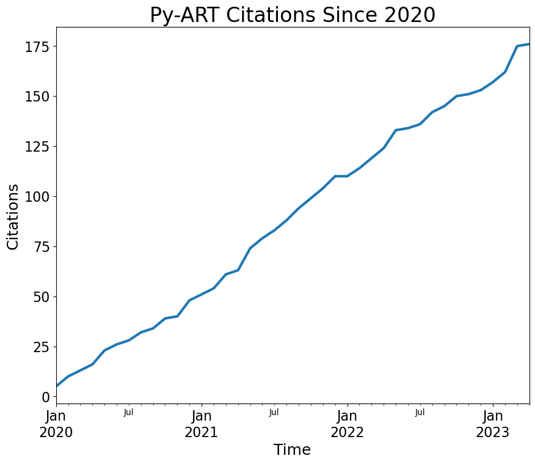

Citation Metrics#
Within this notebook, we aggregate citation stastics which have been gathered from the community, in csv stored in /data/pyart/pyart-citations.csv
Imports#
import pandas as pd
import matplotlib.pyplot as plt
Load the Data#
df = pd.read_csv("../data/pyart/pyart-citations.csv",
index_col='Date',
parse_dates=True)
df.count()
Title 176
dtype: int64
Plot the Citation Stats, Grouping by Month#
fig = plt.figure(figsize=(10,8))
ax = plt.subplot(111)
df.groupby(by=pd.Grouper(freq='M')).count().cumsum().plot.line(legend=False,
linewidth=3,
ax=ax)
plt.xticks(fontsize=16)
plt.yticks(fontsize=16)
plt.xlabel("Time", fontsize=18)
plt.ylabel("Citations", fontsize=18)
plt.title('Py-ART Citations Since 2020', fontsize=24)
plt.savefig("monthly_citation_stats_through_april_2022.png", dpi=300, transparent=False, facecolor='white')
